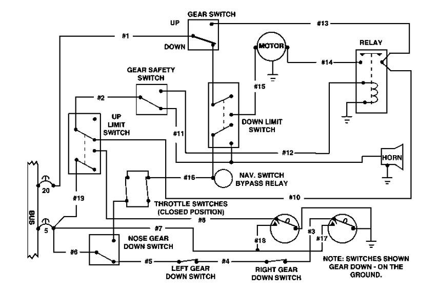

GREEN GEAR DOWN
RED WARNING
HORN OFF
Landing Gear Controls
Power: OFF
Gear: DOWN
Throttle: FORWARD
Control Valve: NEUTRAL
Push-To-Test Red Lamp
Click on the schematic to collect map points.
Points print to the console as:
L### x y
Open console with
F12
.
